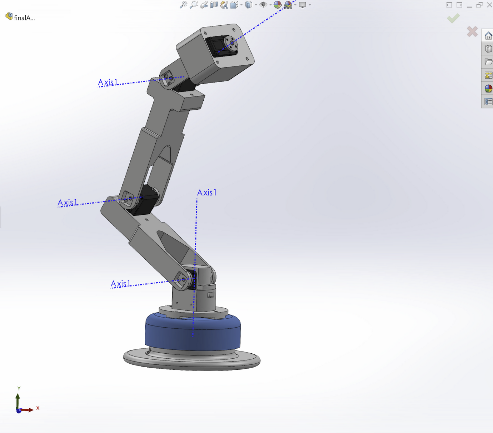
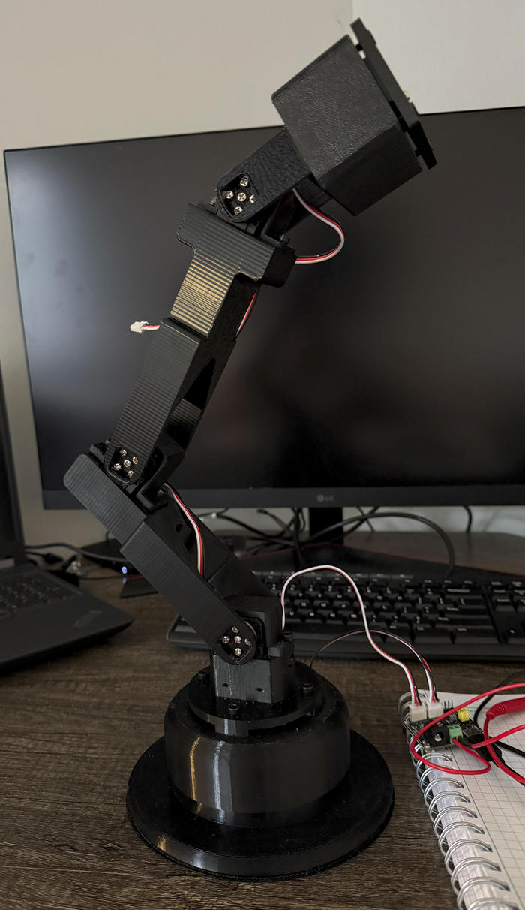

Robotic Arm In Progress
Personal Project · 2026 – Present
ROS2
MoveIt2
SolidWorks
3D Printing
NVIDIA Jetson
Feetech Servos
Computer Vision
The Idea
A fully 3D-printable robotic arm that can identify and manipulate objects in its workspace, designed so anyone with a printer, a few Feetech serial-bus servos, and an NVIDIA Jetson can build their own. The goal is a documented, end-to-end reference platform, mechanical CAD, control software, ROS2 control stack, that someone else can clone, modify, and build on.
Architecture
Three layers, each running on the hardware best suited to it:
Mechanical, 5 DOF + Parallel-Jaw Gripper
- Fully 3D-printable structure designed in SolidWorks, base, arm links, wrist, and a parallel-jaw gripper.
- Six Feetech STS3215 (30 kg·cm) serial-bus servos, five driving the arm joints and one driving the gripper.
- Designed for FDM printability, no support-heavy geometry, snap-fit assembly where possible.
Servo Control, Waveshare Serial Bus Driver Board
- A Waveshare ST/SC Serial Bus Servo Driver Board drives the Feetech serial-bus servos, handling the half-duplex TTL communication and 12V power breakout.
- Connects to the Jetson over USB/serial, which sends joint commands and reads back servo feedback (position, load), offloading the low-level bus handling from the main compute.
Vision & Planning, Jetson + Intel RealSense D415
- NVIDIA Jetson runs the ROS2 stack, MoveIt2 for motion planning, realsense-ros for depth perception.
- Intel RealSense D415 depth camera mounted eye-to-hand, fixed view of the workspace, with the URDF calibrated to the camera frame.
- Depth pointcloud feeds into MoveIt2's collision-checking layer for obstacle awareness during planning.
Current Progress
The full arm is now modeled in SolidWorks, all five joints, the gripper, links, wrist, and base, and a first physical prototype has been 3D-printed, assembled, and wired with the Feetech serial-bus servos. Current work is on the servo control through the Waveshare driver board and bringing up the ROS2 / MoveIt2 stack, with the RealSense vision integration to follow.

Full 5-DOF assembly (plus gripper) modeled in SolidWorks, joint axes shown.

First 3D-printed prototype, assembled and wired with the Feetech servo bus.
The Long-Term Goal, Etsy Integration
The bigger picture: I run an Etsy shop (Rilos 3D Solutions) selling 3D-printed parts I design myself. The eventual goal for this arm is to integrate into that fulfillment workflow, picking and packing light 3D-printed products as orders come in.
← Back to Home